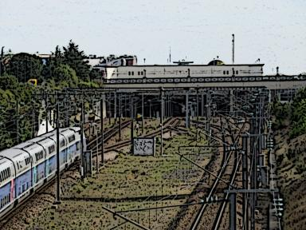
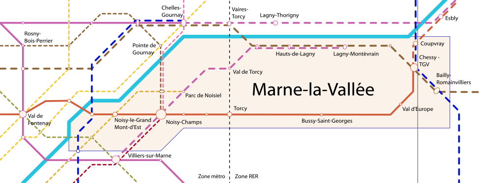
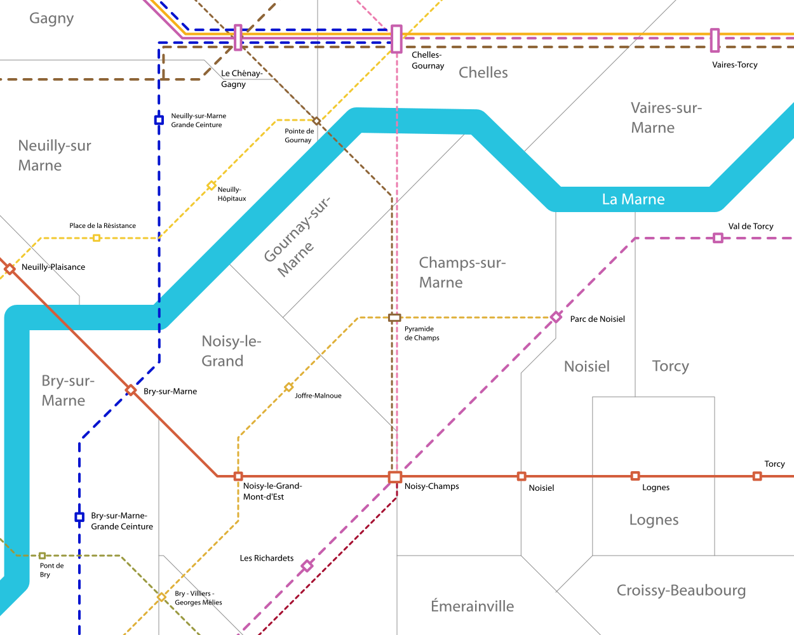
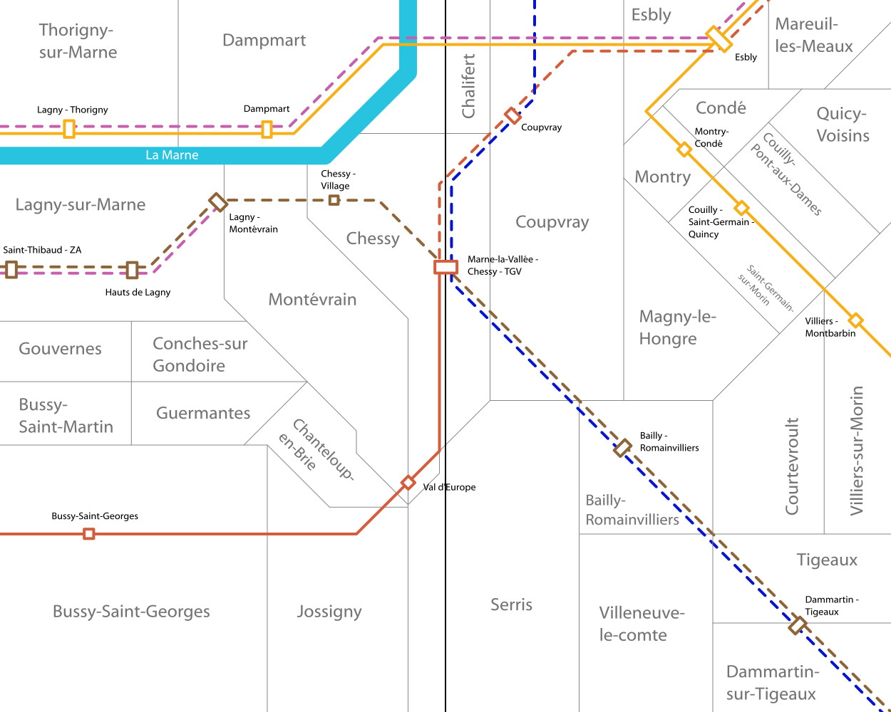

Marne-la-Vallée
Communes de Bailly-Romainvilliers, Champs-sur-Marne, Chessy, Lognes, Noisiel, Noisy-le-Grand, Torcy, Lagny-sur-Marne, Montévrain



La ville nouvelle de Marne-la-Vallée est l'un des points les plus remarquables de la politique d'aménagement du territoire de ces 40 dernières années. Sa création étalée sur plus de 30 ans et 30 km est une réussite en matière de canalisation de l'urbanisation de l'Île-de-France.
En matière de transports en commun la dorsale de cette ville nouvelle, la branche Chessy du RER A, montre ses limites tant en terme géographique, par son éloignement des centres récemment urbanisés, qu'en termes de capacités.
Pour remédier à ces problèmes, le Plan Ile-de-France propose l'extension des lignes de métro 10 et 11 pour améliorer la desserte de la moitié ouest de la ville nouvelle, en complément de la création des métro 15 et 16 du projet Grand Paris Express. Et pour la moitié est nous proposons l'extension des RER E et A complétée par la création de la tangentielle Seine-et-Marne et du RER G.
Cartes
{kind=link}

Cliquer pour agrandir
{kind=link}

Cliquer pour agrandir
{kind=link}

Cliquer pour agrandir